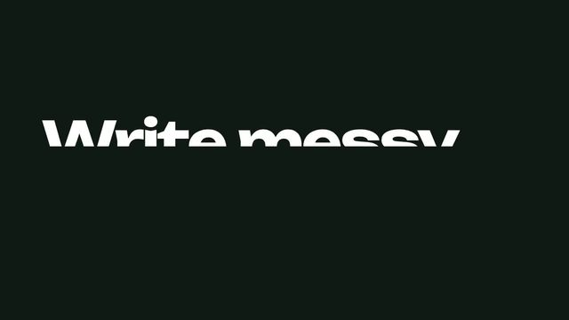
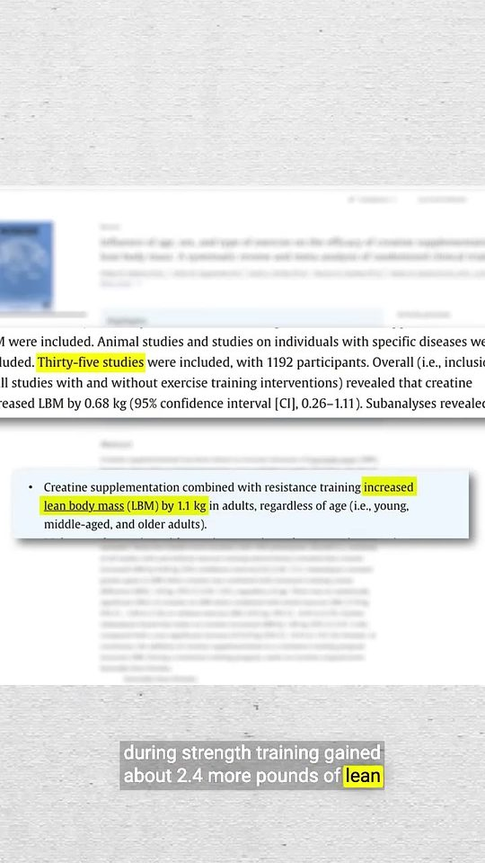
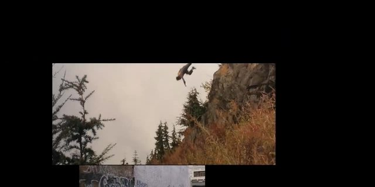
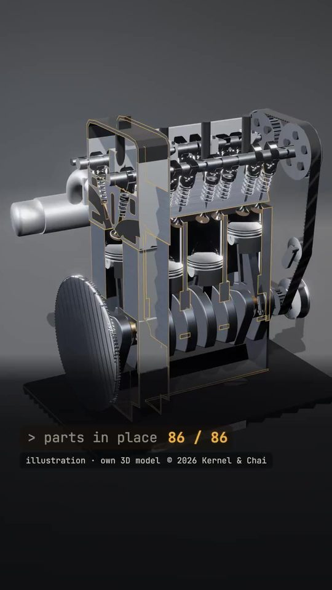
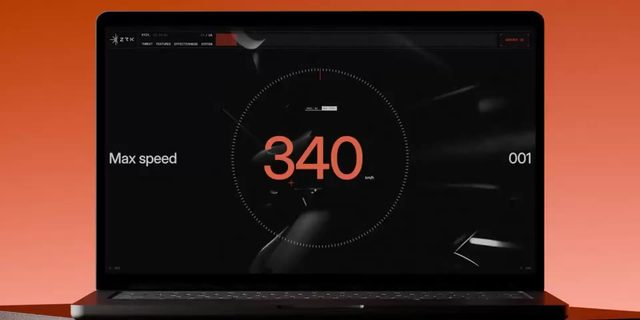
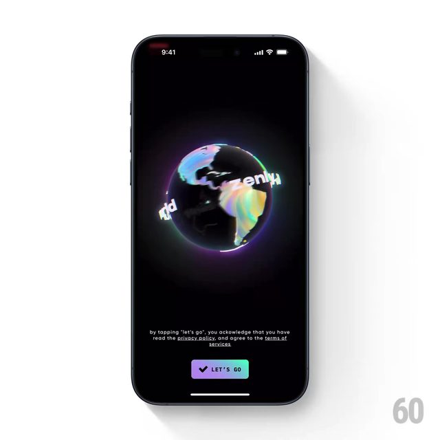
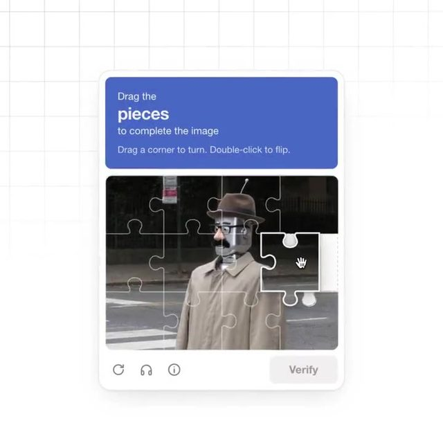
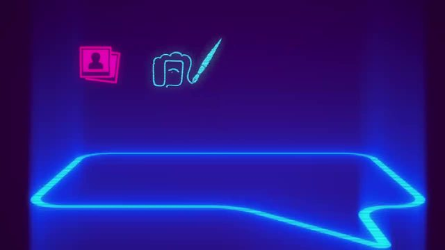

鱼知道 · 审美雷达周一至周六 15:00 · 周日精选
审美日报
动效、片头片尾、转场和节奏
每天挑 10 条视频制作上值得借的作品，先看过再选。点封面直接播放，喜欢就点心。
最新

2026-11-14 审美日报
今天周六，细拆字体版式：Fluo 键盘 App 的 36.4 秒发布片（看片工具完整看完），拆了「红线划掉、绿块改好」的改错高亮、像素方块擦屏和全片卡鼓点，并对照了动效实现规则。点赞接口这次返回 429，没读到新的赞和踩；评论没有新增。今天 10 条里代码动画、UI 动效、3D 质感、字体版式各 3 个标签，另有 MG、剪辑节奏、知识讲解各 1–2 条；没有补课旧作。
技巧学习
技巧学习
噪声晃动、错开编排、形变遮罩、视差、一拍二、着色器转场、光扫过……每个进阶动效技巧配典型案例：在片子哪一秒、怎么做、Remotion / Three.js 里怎么写。
全部
- 2026-11-14 审美日报2026-11-14 周六 · 10 条

2026-11-13 审美日报2026-11-13 周五 · 10 条
2026-11-12 审美日报2026-11-12 周四 · 10 条
2026-11-11 审美日报2026-11-11 周三 · 10 条
2026-11-10 审美日报2026-11-10 周二 · 10 条
2026-11-09 审美日报2026-11-09 周一 · 10 条
周精选2026-11-08 审美周精选2026-11-08 周日 · 10 条 · 精选 2026-11-07 审美日报2026-11-07 周六 · 10 条
2026-11-07 审美日报2026-11-07 周六 · 10 条
2026-11-06 审美日报2026-11-06 周五 · 10 条- 2026-11-05 审美日报2026-11-05 周四 · 10 条
 2026-11-04 审美日报2026-11-04 周三 · 10 条
2026-11-04 审美日报2026-11-04 周三 · 10 条 2026-11-03 审美日报2026-11-03 周二 · 10 条
2026-11-03 审美日报2026-11-03 周二 · 10 条 2026-11-02 审美日报2026-11-02 周一 · 10 条
2026-11-02 审美日报2026-11-02 周一 · 10 条 周精选2026-11-01 审美周精选2026-11-01 周日 · 10 条 · 精选
周精选2026-11-01 审美周精选2026-11-01 周日 · 10 条 · 精选 2026-10-31 审美日报2026-10-31 周六 · 10 条
2026-10-31 审美日报2026-10-31 周六 · 10 条 2026-10-30 审美日报2026-10-30 周五 · 10 条
2026-10-30 审美日报2026-10-30 周五 · 10 条 2026-10-29 审美日报2026-10-29 周四 · 10 条
2026-10-29 审美日报2026-10-29 周四 · 10 条 2026-10-28 审美日报2026-10-28 周三 · 10 条
2026-10-28 审美日报2026-10-28 周三 · 10 条 2026-10-27 审美日报2026-10-27 周二 · 10 条
2026-10-27 审美日报2026-10-27 周二 · 10 条 2026-10-26 审美日报2026-10-26 周一 · 10 条
2026-10-26 审美日报2026-10-26 周一 · 10 条 周精选2026-10-25 审美周精选2026-10-25 周日 · 5 条 · 精选
周精选2026-10-25 审美周精选2026-10-25 周日 · 5 条 · 精选 2026-10-24 审美日报2026-10-24 周六 · 6 条
2026-10-24 审美日报2026-10-24 周六 · 6 条